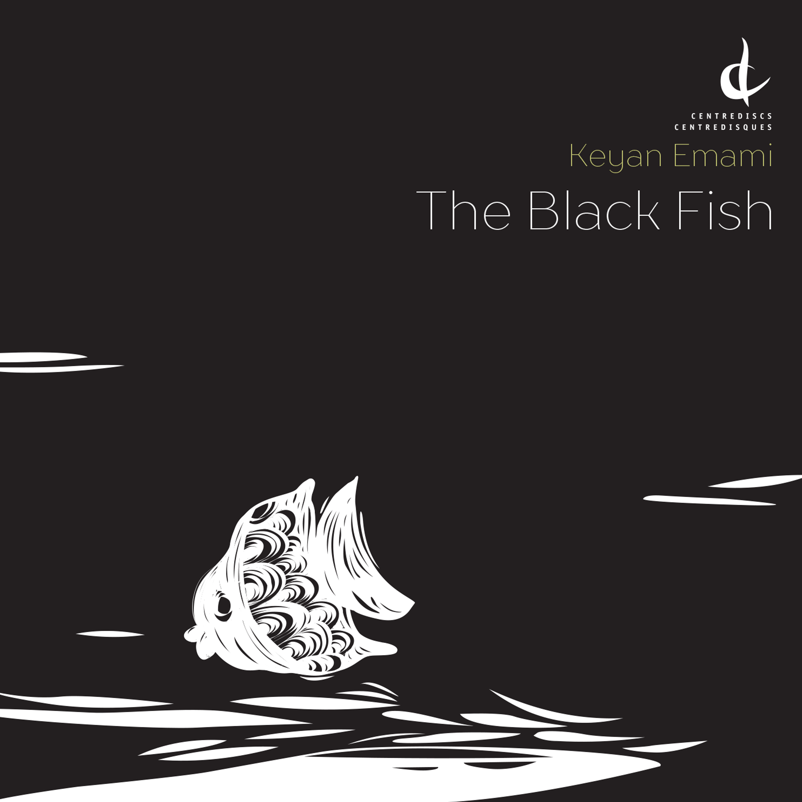
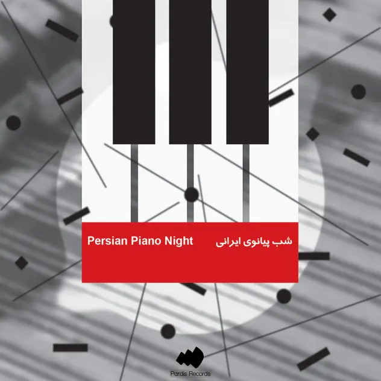
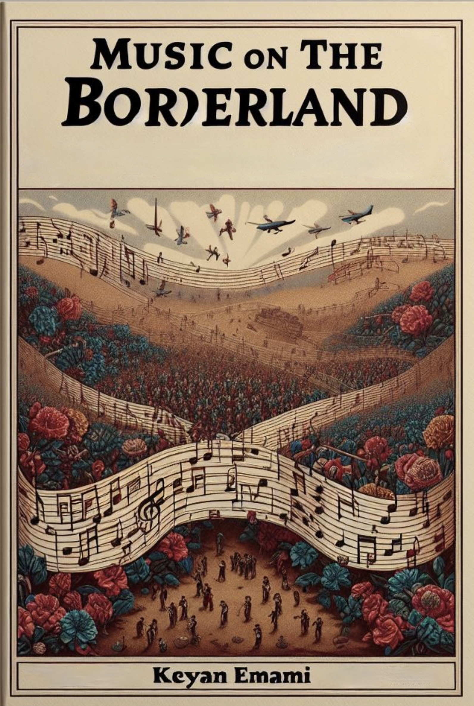

Discography
Explore compositions from three albums—"The Black Fish,' 'Recurrence,' and 'Persian Piano Night"—with studio-recorded performances. Dive into these musical journeys, available now on all major streaming platforms.
THE BLACK FISH ALBUM
“The Black Fish” receives JUNO Award nomination for Classical Composition of the Year (2023)! Order at iTunes, Bandcamp, Centrediscs

KIAN IN RAINBOWS

FIVE PIECES FOR PIANO

Writing
MUSIC ON THE BORDERLAND: CONTEMPORARY IRANIAN COMPOSERS’ ODYSSEYS
(The University of Toronto Doctoral Research Project)
This research paper delves into Iran's sociopolitical music landscape spanning from the 1979 Revolution to the conclusion of the Iran-Iraq war in 1988. It reveals the diverse influences at macro and personal levels, providing insights into the experiences of contemporary Iranian composers, including my own experience, amidst this transformative period. To access the paper, please click here.

Translation of 'FORM AND DESIGN' into Persian
Presenting my translation of 'Form and Design' into Persian, commissioned by the prestigious Mahoor Institute and originally published by Cambridge University Press. This work introduces the fundamentals of musical forms and serves as an introductory exploration into musical structures. With meticulous attention to detail and numerous assignments, I've ensured clarity and readability for Persian audiences, offering valuable insight for students in music conservatories and colleges.
Preview a sample of the translated book here.

Digital Score and Parts Availability: Please note that PDF files of scores and parts are available for purchase directly from the composer. For large orchestral and chamber works, rental options for parts can also be discussed.